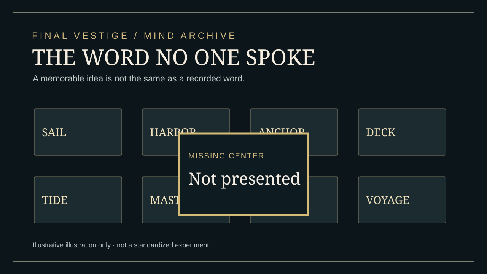

The Mind & Perception Archive · Buyer evidence / draft
Could an audio routine make it easier to begin?
A purchased recording cannot do the remembering—or the deciding—for you. But structure may still be worth paying for. Here is what the Zen12 package actually advertises, what science does not establish, and what you can test for free first.
This is an independent, unfinished buying guide, not an endorsement, product review based on personal use or currently available purchase link. No affiliate tracking or purchases are enabled.
The evidence first
The word nobody read aloud
In a 1995 memory experiment, participants sometimes recalled a strongly associated word even though it was never presented. In one design, the absent word appeared in recall about 40 percent of the time across tested lists. The point is not that memory is hopeless. It is that a mind can assemble a convincing experience from meaning and expectation. A marketing promise should be held to an even stricter standard, not excused because it sounds plausible.
Read the unpublished source-led article, The Word No One Spoke, in the same source-control review package. See Roediger & McDermott (1995). Their experiment is not a Zen12 product trial.
The free trial that needs no purchase
Twelve minutes with your own attention
- Choose one small, safe task you have avoided. Write a precise next action.
- Set a twelve-minute timer, with notifications muted if feasible.
- Do only that first action, and note distractions without judging them.
- Record whether you started, what interrupted you and whether you want structured audio next time.
The result is your observation of one attempt, not a medical outcome or a controlled efficacy test. Repeat only if it seems useful. The existing free 52-page Seven Day Focus Fieldbook provides a structured log and audio-claim checklist via the site's existing signup. No additional form is created here.
The actual offer, described accurately
What the seller says is included
Zen12 Premium's public order page lists twelve levels and 48 MP3 recordings, alongside a guide, audio resources and seller-described extras. Its public product description offers four listening formats: guided meditation, relaxation music, nature sounds and white noise.
At an inspected public order screen on November 14, 2026, a $87.99 total appeared, after a displayed discount and a $0.00 local tax line. This is historical seller-screen evidence, not a promised current or referral checkout price. A one-year refund promise is displayed by the seller; performance and eligibility have not been independently verified.
Official source: Zen12 public product and order pages (zen12.com and zen12.com/getstarted), observed November 14, 2026. Confirm current terms yourself before any purchase.
A decision instead of a promise
Five questions worth asking
Will you actually use recorded audio?
If you dislike headphones or guided narration, access to dozens of files may not solve that friction.
Is the format the value?
The plausible value is organized prerecorded sessions and a range of sound formats. This alone does not demonstrate superior attention, relaxation or treatment outcomes.
What is the real checkout total?
Public promotional prices can change, and tax may differ. Final Vestige has not authenticated a referred purchase flow.
How will refunds work?
Read the seller's current written guarantee and support process. A displayed promise is not independent evidence that refunds are always fulfilled.
Does the science justify the big promise?
No product-specific evidence has been established here for the seller's twelve-minutes-equals-an-hour claim, clinical benefits, brain enhancement or the idea that a recording meditates on your behalf.
What if it is not for you?
You can use free timed practice and the existing Fieldbook without giving a company payment details. You do not need this product to run the exercise above.
Commercial decision · authorization pending
Review the official offer—only after approval
We are holding the merchant connection because Final Vestige's named affiliate approval, eligible channels, issued tracked destination and referred checkout terms have not been verified. The actual product button is deliberately disabled; it cannot take an order.
Prospective commission disclosure: If Final Vestige later offers an approved purchasing link and you buy through it, Final Vestige may earn a commission at no additional cost to you. There is currently no active buying link here.
No artificial deadline, fake stock shortage, cloaked redirects, purchase pixels, duplicate newsletter or unverified customer outcome. Not a substitute for healthcare or psychological care.
What would count as proof?
Evidence specific to this product and its claimed outcomes, not unrelated perceptual demonstrations. The FTC endorsement guidance explains material-connection disclosures; the FTC health-claims guidance explains substantiation. A seller's broad claim is marked as a seller claim, never as an independent finding.
Publication state: isolated source-controlled preview only. Merchant permissions, current price, satisfaction claims and real-world A/B outcomes unverified. No affiliate conversion was measured.
Optional 42-second context film · not playable yet
A memory can feel complete and still need a source

Read complete 42-second film transcript (captions planned)
Eight words. One missing idea. In 1995, memory researchers asked people to recall words they had actually heard. Sometimes the word that felt most familiar had never been spoken. The mind had supplied it. That study tells us something about remembering, not whether a meditation recording works. Before buying a promise, check the source. Try a free twelve-minute focus session. Decide whether a structured audio library fits you. And ask for proof when someone promises more.
Six synchronized caption cues in R390_CAPTIONS.vtt; storyboard and poster only, not encoded WebM or MP4. If later implemented, native controls, captions, a visible transcript, no autoplay, reduced-data delivery and no-JS content are required.